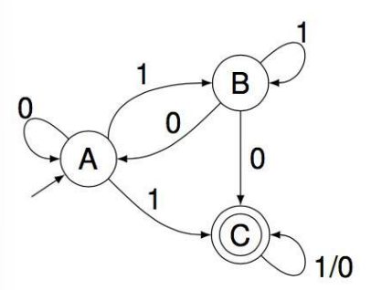
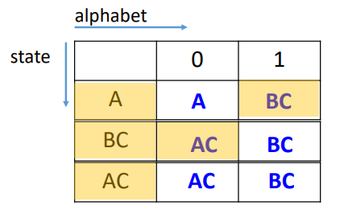
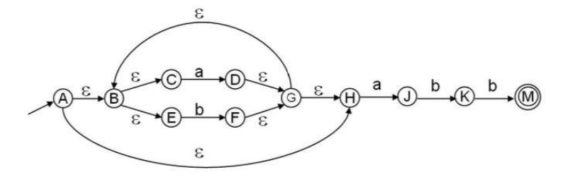
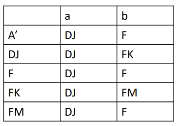
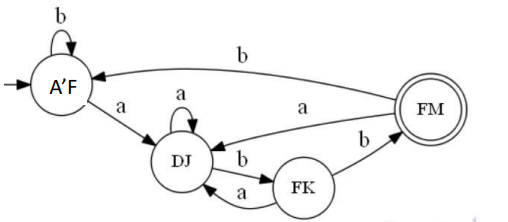

编译原理课程笔记(三)
NFA->DFA
DFA：确定有限状态自动机 deterministic finite automaton
一个状态对于每一个输入只有一个跳转状态：例如A输入1跳转到B，不可能输入1既有可能到C也有可能到D
没有空转移(\(\epsilon-\)moves)
一个字符串从start到accept或not accept只有一条路径
没有终止节点也可能是DFA！
算法：DFA->Table
DFA其实就是一个状态转移表。
1 | 开始状态为状态集合D,D中所有状态都为unmarked |
eg:

1.初始D={A}
2.mark A, move(A,0) = A, move(A,1)=BC
3.BC不属于D，所以D = {A, BC}
4.Dtran[A,1] = BC, Dtran[A,0] = A
5.mark BC, move(BC,0)=AC, move(BC,1)=BC
6.AC不属于D，所以D = {A, BC, AC}
7.Dtran[BC,0] = AC, Dtran[BC,1]=BC
8.mark AC, move(AC,0)=AC, move(AC,1) = BC
9.Dtran[AC,0]=AC, Dtran[AC,1]=BC
10.结束，获得下表：

算法：DFA的最小化
如果DFA中的两个状态同属于final_set（即accept状态）或者非final_set，且这两个状态对于任何symbol到达的下一个状态都相同，那这两个状态可以合并为一个状态。
算法：NFA-->DFA 全流程
以下图的NFA为例：字符集为{a,b}

1.创建NFA table
列：A-M，初始的所有状态
行：空字符+初始的所有symbol
2.更新空字符对应的那一列为状态的\(\epsilon-\)闭包
- \(\epsilon\mbox{-}\)闭包，指状态集合D经过空边(\(\epsilon\)边)可以到达的所有状态的集合
3.基于闭包更新其他列，例如D的空闭包是DGBCEH，则move[D,a] = DJ, move[D,b] = F
- 注意，这里move[D, a]相当于move[BCDEGH, a]，BCDEGH这些状态接收a的输入，到达的下一个状态只可能是D或者J，所以move[D, a] = DJ.
4.根据更新后的列，重新构建DFA
!](image3.png)
- 如上表，把第一行的A的\(\epsilon-\)闭包作为新状态A‘，作为DFA-table的列，a,b为DFA-table的行
- 第一步，$A' DJ,A' F $，得到新状态DJ, F，新状态全部压入队列。
- 第二步，取队列首元素——状态DJ . 从表中知道D通过a到DJ，J没有a的路径，所以DJ通过a到DJ，同理，DJ通过b到FK. FK是新状态，加入队列。
- 取队列首元素F，move[F,a]=DJ,move[F,b]=F，F和DJ都不是新状态，不进队列。
- 取队列首元素FK，move[FK,a] = DJ, move[FK,b] = FM，FM是新状态，进队列。
- 取首元素FM，move[FM,a] = DJ, move[FM,b] = F，没有新状态，不进队。
- 队列为空，结束，得到新的DFA.
结果如下图：

5.最小化：
上表A‘和F都属于non-accepting states（即不是final），而其遇到a和b的状态转移相同，所以合并。
A’与FM一个属于non-accepting，一个是accepting states，所以不能合并。
| a | b | |
|---|---|---|
| A'F | DJ | A'F |
| DJ | FJ | FK |
| FK | DJ | FM |
| FM | DJ | A'F |
化简后的DFA如下图：只要节点所含状态包含NFA的终止状态(M)，DFA的对应节点就是终止节点。

NFA和DFA处理词法的时空复杂度：
- DFA：
由于NFA的N个状态一共可能有\(2^N-1\)个子集，所以空间复杂度：\(O(2^N)\)
设input length为|X|,每个字符输入DFA获得accept or non-accept都是常数时间，所以时间复杂度\(O(\lvert X\rvert)\)
NFA:
时间复杂度\(O(\lvert X \rvert N^2)\)